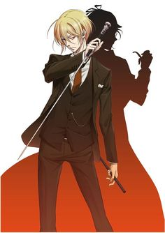

Wallpapers
.jpg)
William James Moriarty (ウィリアム・ジェームズ・モリアーティ, Wiriamu Jēmuzu Moriāti), also known as just Moriarty, is the main character of MORIARTY THE PATRIOT. His real name is unknown, having assumed the name of his deceased adoptive brother at a young age. His arch nemesis is Sherlock Holmes, & he's a professor of mathematics and a crime consultant.
William is a pale-skinned, lean young man with blonde, stringy hair that is medium in length with long side bangs and a prolonged side-fringe. His eyes can be described as somewhat 'expressive'. But his facial expression is almost unintelligible. He has a handsome appearance, and has been told he looks better when he smiles. For clothing, he wears a brown, three-piece suit with a red tie and a golden pocket watch. In some scenes he is seen wearing a top hat and holding a cane.
William is highly intelligent and quite knowledgeable. As a child, his intelligence was said to be 'enough to leave even the adults speechless'. He has a natural talent to grasp everything through his broad knowledge. He likes reading books and is very good at mind games such as chess or cards.
After becoming an adult, he has grown up to be an elegant gentleman, a head-to-toe perfect noble. He is quite charismatic, as he can easily associate with anyone, regardless nobles or commoners. His professional mannerism is one of the reasons why people trust him too easily. He has a way with his words and is very good at seeing through lies.
He can't easily trust anyone, for, he thinks no one in the world is selfless. But he’s reliable to anyone close to him and tries not to let them down. He hates to be in debt. He has a keen observation, which helps him to see through people’s real intention. He’s a person who would do things that would hurt himself and his morals for his ultimate goal. While he seems to only care for his goal of achieving a new, classless world, he cares deeply for his brother Louis, feels indebted to Albert and through complicated schemes he manages to uphold the relationship between his subordinates, for example Moran and Bonde. Thus, he views them rather as his friends than pawns.
He is extremely confident and is a terrific strategist, coming up with long-run schemes to subdue his targets and gather information. Although they are very thought out plans, he does not credit himself for most of what he has done. He never reveals his true intentions, not even to his teammates until the right time.

*Moriarty is based off his incarnation in the original Sherlock Holmes by the British author Sir Conan Doyle, Professor Moriarty is undoubtedly the most recognizable of Holmes' foes, though he only appears in about two of the sixty Sherlock Holmes stories, with mentions in five others.
*While his birthday is officially listed as April 1st this, like his name, was merely another facet of identity he appropriated from Albert's biological brother, the original William James Moriarty, after killing him. His actual date of birth is currently unknown.
*Will came first in both the first and second character popularity polls.
*He and Sherlock are the same age (24 years old) and height (185 cm).
*Due to assuming the place of Albert's biological brother he attended Eton College, which the original William was scheduled to attend prior to his death.
*Will seems to have a fondness for fish in dishes that others consider unusual. In the Volume 2 omake he noted in his diary he loved the stargazer pie, a pie featuring fish heads poking out of the crust, baked by Louis, and in a birthday illustration he can be seen eating birthday cake that also features fish heads.